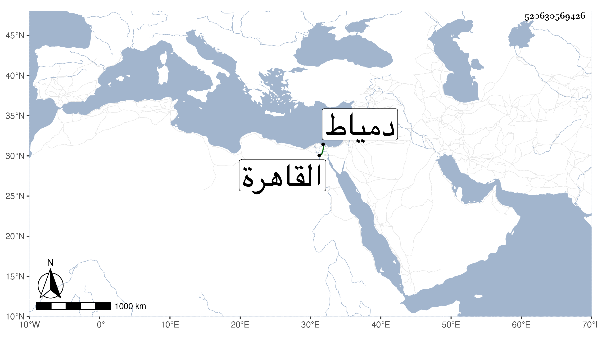

0902Sakhawi.DawLamic.ITO20230111-ara1.EIS1600.520630569426
Biography ID: 520630569426
إبراهيم بن محمد بن محمد بن عمر بن يوسف بن عطية ورأيته بخطه مقدما على يوسف بن جميل ككبير القاضي برهان الدين أبو إسحاق المغربي الأصل القهوقي بضم القاف ثم هاء وبعد الواو قاف اللقاني ثم القاهري الأزهري المالكي . ولد في أوائل سنة سبع عشرة وثمانمائة بالقهوقية من أعمال لقانة ونشأ بها فقرأ القرآن عند جماعة منهم البرهان إبراهيم بن عثمان بن سعيد بن النجار والد الخطيب الوزيري وكان رجلا مباركا وكذا أخوه ويدل لذلك أنه اتفق أن صاحب الترجمة رأى وهو عائد في سورة الحج أنه ارتقى إلى أعلى درجة بمنبر جامع الأزهر ليخطب بالناس وأنه خطب بهم بخطبة الرسالة وذلك قبل حفظه لها فقصه على المشار إليه فقال له تبلغ مبلغا في العلو والتدريس وإذا وقع لك ذلك فحلني فقال له نعم فما مات حتى رآه يدرس وذكره بالمنام فتذكره والتمس منه الوفاء بما وعده به ففعل ولما انتهى حفظه للقرآن بالبلد المذكور حفظ به المنظومة الغافقية في المذهب ثم بعض الرسالة ثم تحول منها إلى القاهرة فجاور بجامع الأزهر تحت كنف الشمس بن موسى اللقاني وأكمل حفظ الرسالة ثم حفظ مختصر الشيخ خليل وألفية ابن مالك وأخذ الفقه عن جماعة كالزين طاهر ولازمه حتى كان جل انتفاعه به والزين عبادة وأحمد البجائي المغربي وأبي القسم النويري واليسير عن الشهاب الأبدي وعنه وعن الشهاب البجائي وأبي عبد الله الراعي المغاربة أخذ العربية ومما أخذه عن الأخير خاصة شرحه على الجرومية وأخذ عن التقي الحصني في القطب شرح الشمسية وعن الشمني في المطول وحضر دروسه في العضد وغيره وكذا حضر بعضا من دروس الشرواني في الأصلين وغيرهما في آخرين كالقاياتي وحكى لي أنه قال له يا فقيه قد استشكلت في مذهبكم شيئا لم أر التخلص منه وأبداه قال فاختلج في فكري الجواب عنه غير أني حاولت التعبير عنه فما أمكن فتوجهت للزيني عبادة وكان إذ ذاك في انقطاعه عند الشيخ مدين فعرضته عليه فبادر للجواب عنه بما اختلج لي فاستعدته منه مرة بعد أخرى وهو ينوع العبارة إلى أن تمكنت منه ثم عدت إلى القاياتي فأعلمته بذلك فسر ولازم الزين عبادة في انقطاعه وسمع علي الزين الزركشي والمحب بن نصر الله الحنبلي وشيخنا والقاضي سعد الدين بن الديري وآخرين وحج وسافر لدمياط في بعض الضرورات وبرع في الفقه وتصدى للتدريس فيه خصوصا بعد إذن الولوي السنباطي له في ذلك وفي الإفتاء بل واستنابه هو ومن بعده للقضاء وكذا ناب في تدريس الفقه بكل من المؤيدية وأم السلطان والقمحية عن ولد صاحبه البدر بن المخلطة بل استقر في وظيفة الميعاد بالسابقية بعد موت الجلال بن الملقن وصار بأخرة عليه المدار في مذهبه إفتاء وقضاء وكثر قصده بكليهما وحمد الناس منه مزيد تواضعه ورفقه ومداراته وعدم يبسه مع اتصافه باستحضار فروع مذهبه ومشاركته في العربية بحيث يقرئ فيها وكذا في غيرها لكن يسيرا ومزيد فتوته ومروءته وكرمه ولم يزل على طريقته إلى أن كان في يوم الاثنين سادس صفر سنة سبع وسبعين فاستقر به الأشرف قايتباي في قضاء المالكية بعد صرف السراج بن حريز ولبس لذلك بعد يومين وتلقاه بقية القضاة وجمع من نوابهم ونحوهم فركبوا معه إلى الصالحية ثم إلى منزله وباشر على عادته . وله قومات سديدة وعزمات شديدة منها في كائنة البقاعي حيث نسب إليه ذاك القول الشنيع والهول الفظيع في كلام الله عز وجل ورام التخلص من طلب القاضي له بأمر لم ير الاكتفاء به في الدفع عنه فاعتنى به الزين بن مزهر الشافعي وتجشم الحكم بصحة إسلامه لتوقف غير واحد من النواب عن ذلك وسجل عليه بالحكم فسكت القاضي وغيره حينئذ على مضض وكذا كانت له اليد البيضاء في المجلسين المعقودين بسبب هدم الكنيسة وعلم منه كل أحد الإنكار دون رفقته وقال إن فرغ الشافعية من هذه الكائنة ورفعت إلي عملت فيها بالذي أعرفه إلى غير ذلك مما هو مشروح في الحوادث كإشهاره لتاج الدين بن شرف وإعراضه عن شهادة ابن قريبه وإهانته لأبي حامد القدسي وإن كان أفحش ولو كان قيامه مع دربة ورتبة وتذكر وتفكر لكان أدعى لقبوله وأرعى لجانبه عند ذهوله ولذا تكرر جفاء السلطان له وتقرر عنده سيرة بعض أتباعه المهملة إلى ان كان في أول رجب من سنة ست وثمانين حين التهنئة وراجع فيما ظهر للخاص والعام الميل إليه من ثبوت ما قاله الشهابي بن العيني مراجعة لم يرتضها كما بسطت في محلها صرح بعزله وقرر بعد ذلك عوضه المحيوي بن تقي وساء عزله غالب الناس ولزم القاضي منزله غير منفك عن شهود غالب الجماعات سيما الصبح والعشاء في الأزهر مع توعك بدنه وعينيه وربما أقرأ وأفتى وركب لمباشرة درس المؤيدية وغيره نيابة مجانا فيما يظهر ورام فعل ذلك بالبرقوقية عقب موت صاحبه السنهوري فعورض إلى أن استنزل حفيدي شيخه الزين عبادة عن تدريس الفقه بالاشرفية برسباي وأعطاه السلطان بعد موت فتح الدين بن البلقيني بدون مسئلة الميعاد والتفسير بالبرقوقية وظهر منه مزيد إقباله واعتذاره واستحضر حينئذ قوله حين ذكر الزيني زكريا لقضاء الشافعية في جماعة الذي كان أنكره عليه إذ ذاك أنه لا عهد له بالمصطلح وهو منقاد مع جماعته وحال ولده معلوم لما ظهر له ذلك وصار ربما يطلع للسلام عليه وتزايد تعلله حتى مات قبل استكمال شهر بعد موت ابن تقي في آخر يوم الاثنين تاسع المحرم سنة ست وتسعين وصلى عليه من الغد بمصلى المؤمني في مشهد حافل شهده السلطان وأظهر أسفا عليه ثم دفن بتربة سعيد السعداء رحمه الله وإيانا .
